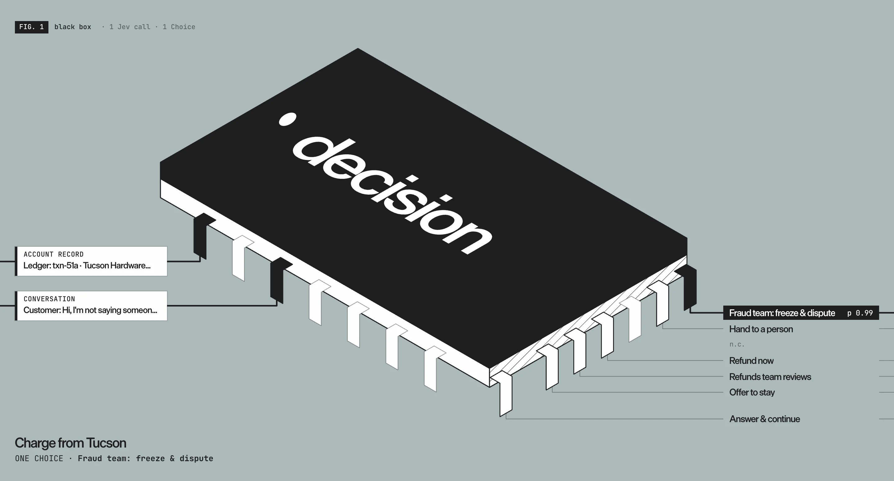
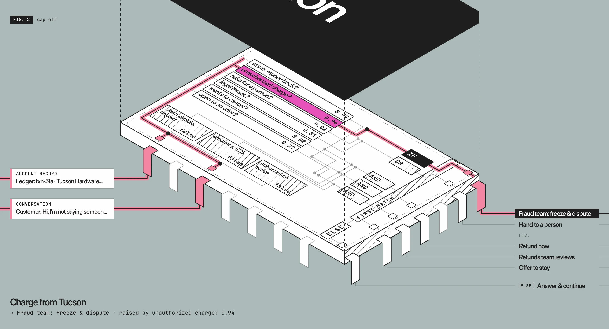
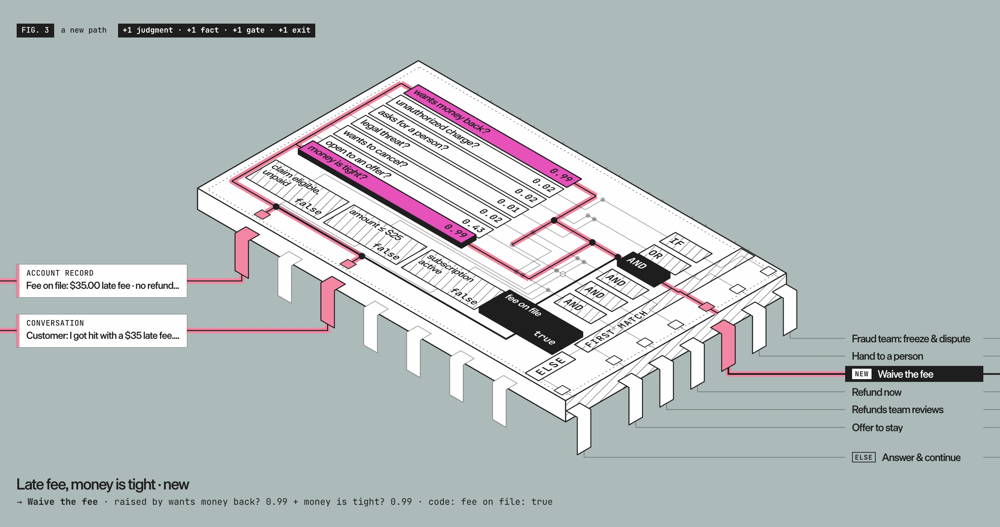

Đừng gọi đó là mô hình ra quyết định
Bản dịch tiếng Việt từ Don’t Call It a Decision Model. Không thấy giấy phép tái sử dụng được nêu trên trang bài viết khi kiểm tra; bản quyền nội dung và hình minh họa thuộc tác giả/TypeSafe AI (typesafe.ai). Các đoạn mã và định danh giữ nguyên tiếng Anh. Phần TL;DR, Know-how & Insight và mindmap là nội dung bổ sung của người dịch.
TL;DR
- Jev đưa ra nhận định; mã nguồn đưa ra quyết định. TypeSafe gọi Jev là mô hình System One, thay vì mô hình ra quyết định.
- Đừng nhồi cả quy trình nghiệp vụ vào một câu hỏi
choice. Hãy tách các nhận định cần hiểu ngữ nghĩa khỏi dữ kiện và quy tắc có thể tính chính xác bằng mã. - Kết hợp nhận định của mô hình với logic tường minh giúp hiểu thiết kế, truy vết nguyên nhân và mở rộng quy trình mà không phải sửa một prompt khổng lồ.
Jev đưa ra nhận định, mã nguồn đưa ra quyết định.
Chúng tôi rất vui khi mọi người nhận ra tầm quan trọng của nhóm mô hình mới mà Jev đã tiên phong. Không có gì ngạc nhiên khi thuật ngữ “mô hình ra quyết định” trở nên phổ biến để gọi nhóm này. Lần đầu thấy Jev chọn một phương án từ một danh sách, bạn rất dễ nghĩ rằng nó đang ra quyết định. Và quả thực, chính chúng tôi cũng đã dùng từ “quyết định” trong tài liệu hướng dẫn của mình! Vậy tại sao TypeSafe vẫn kiên định gọi Jev là mô hình System One thay vì mô hình ra quyết định? Hãy cùng bàn về điều đó.
Vấn đề nằm ở vị trí của Jev trong một hệ thống
Hãy phân tích một hệ thống điển hình bằng phép so sánh với mạch điện: đầu vào ở bên trái (dữ liệu, trạng thái ứng dụng, v.v.), chảy qua phần logic rồi tạo ra đầu ra ở bên phải. Lấy một phiên bản đơn giản hóa của quy trình Chăm sóc khách hàng trên trang đánh giá của chúng tôi làm ví dụ. Cách tiếp cận sơ khai khi dùng Jev trong quy trình này là đưa toàn bộ quyết định vào một câu hỏi Jev duy nhất:

Khi lần đầu nhìn thấy Jev, mọi người thường hình dung nó sẽ nằm trong hệ thống như thế này: cung cấp toàn bộ trạng thái và để nó quyết định điều gì nên xảy ra. Thường thì cách làm này trông giống một câu hỏi Choice lớn, với rất nhiều mô tả bằng ngôn ngữ tự nhiên về logic nghiệp vụ và các điều kiện ngoại lệ được nhồi vào trường criteria.
Dù có thể hoạt động, cách này sẽ sớm khiến bạn phải làm điều chúng tôi gọi là “nhào lộn với prompt”: sửa đi sửa lại các phần giải thích điều kiện dài dòng để xử lý từng trường hợp biên. Rồi hôm sau, một đầu vào mà bạn chưa nghĩ tới xuất hiện, hệ thống thất bại, và bạn lại quay về nhồi thêm ngoại lệ cùng những lời làm rõ vào phần văn xuôi trong criteria.
Điều đang diễn ra ở đây là đặt trí thông minh vào sai tầng trừu tượng. Hệ thống của bạn vốn đã biết tiêu chí cho từng kết quả dự kiến, và chỉ một phần trong số đó thực sự cần đến nhận định. Phần còn lại là logic chính xác, rành mạch:
| Khi | Nhánh đầu ra |
|---|---|
| Báo có khoản thu chưa được cho phép | Nhóm chống gian lận: phong tỏa và khiếu nại giao dịch |
| Yêu cầu gặp người thật hoặc đe dọa thực hiện hành động pháp lý | Chuyển cho người thật |
| Muốn lấy lại tiền, yêu cầu đủ điều kiện, ≤ 25 USD | Hoàn tiền ngay |
| Muốn lấy lại tiền, yêu cầu đủ điều kiện, trên 25 USD | Nhóm hoàn tiền xem xét |
| Muốn hủy, gói đăng ký đang hoạt động, sẵn sàng cân nhắc ưu đãi | Đưa ra đề nghị giữ chân |
| Các trường hợp còn lại | Trả lời và tiếp tục |
Vậy Jev nằm ở đâu trong kiểu hệ thống này? Để hiểu câu trả lời, chúng ta cần nhìn vào bên trong xem một quyết định thực sự được tạo nên từ những gì:
Mở nắp ra
Quyết định trong hệ thống hiếm khi là một lựa chọn nguyên tử duy nhất. Mở nắp ra, ta thấy những đường dây đi từ đầu vào qua các nút mã nguồn và các nút nhận định. Quyết định trong phần mềm, quy trình và hoạt động kinh doanh được xây dựng theo cách đó. Kiểm tra “yêu cầu đủ điều kiện, chưa được thanh toán” là chuyện tính toán. Trả lời “người dùng có muốn lấy lại tiền không?” cần đến nhận định. Đó là nơi Jev thuộc về, và cũng chính là điều chúng tôi muốn nói khi dùng tên System One: những nhận định nhanh, mang tính trực giác mà một người am hiểu đưa ra trong vài giây.

Mã nguồn rất giỏi trả lời những điều nó có thể trả lời chính xác. Jev chỉ trả lời những câu hỏi nhỏ mà mã nguồn không thể. Sau đó, logic kết hợp những câu trả lời ấy thành quyết định. Chính sự kết hợp giữa nhận định và mã nguồn cho phép hệ thống đưa ra những quyết định đáng tin cậy, có thể quan sát và truy vết.
Vì sao nên xây dựng theo cách này
1. Thiết kế rõ ràng
Hệ thống đáng tin cậy đòi hỏi phải hiểu rõ cách các quyết định được đưa ra. Bằng cách phân rã quyết định thành những nhận định nguyên tử và các đường đi logic, chúng ta hiểu rõ hơn điều gì thực sự đi qua hệ thống, cũng như những trường hợp biên cần xử lý.
2. Khả năng quan sát
Trong ví dụ gộp mọi thứ vào một nhận định ở trên, bạn sẽ viết một câu hỏi Choice duy nhất, nhồi đầy tiêu chí:
{
"model": "jev-latest",
"state": {
"conversation": "Customer: Hi, I'm not saying someone stole my card or anything, but t…",
"account": "Ledger: txn-51a · Tucson Hardware Supply · $240.00 · Aug 14 · card pr…"
},
"questions": {
"action": {
"type": "choice",
"instructions": "What should support do with this conversation?",
"criteria": {
"fraud_team": "The customer reports a charge, withdrawal, login, or account change they did not make or authorize. Pick this even if they also want a refund, ask for a person, or want to cancel.",
"handoff_person": "The customer asks for a person, a manager, or a supervisor, or threatens legal action, a lawyer, or a regulator. Not if they report an unauthorized charge.",
"instant_refund": "The customer wants money back, the refund claim on the account is eligible and not already refunded, and the amount is $25 or less. Not if they report an unauthorized charge or ask for a person.",
"refunds_team": "The customer wants money back, the refund claim on the account is eligible and not already refunded, and the amount is over $25. Not if they report an unauthorized charge or ask for a person.",
"retention_offer": "The customer wants to cancel, close, or downgrade, the subscription is active, and they would stay if something were offered or fixed. Not if any option above applies.",
"answer": "None of the above. Answer the customer and continue the conversation, with no action on the account."
}
}
}
}Khi một trường hợp bị chuyển đến nơi không mong đợi, dữ liệu duy nhất bạn có về nguyên nhân chỉ là một con số xác suất. Nhận định nào có vai trò quyết định? Quy tắc nào? Không có gì bên trong để đọc.
Nhưng khi mở nắp ra, ta có các bản ghi như sau:
exit fraud_team
├─ g_fraud reports an unauthorized charge (p > 0.6) true ← decided
├─ g_person asks for a person, or threatens legal action … –
├─ g_instant wants money back, claim eligible, amount ≤ $25 –
├─ g_large wants money back, claim eligible, amount over… –
├─ g_offer wants to cancel, subscription active, open to… –
└─ else answer –
judgments · Jev
wants_money_back 0.99
reports_unauthorized 0.94 ←
requests_human 0.02
threat_legal 0.01
wants_to_cancel 0.02
open_to_offer 0.22
facts · your code
refund_eligible false
small_refund false
subscription_active falseThay vì “mô hình đã chọn fraud_team”, bạn nhận được “mô hình đã đưa ra sáu nhận định này, và đây là đường đi logic tiếp theo”. Dấu vết cho thấy reports_unauthorized đã đưa trường hợp đó tới nhóm chống gian lận. Giờ đây, chúng ta có dữ liệu quan sát thực sự để dựa vào mà hành động. Nhận định sai, hay quy tắc sai? Dấu vết giúp bạn phân biệt, và cách sửa có thể tập trung hơn nhiều.
3. Khả năng mở rộng
Giả sử đột nhiên bạn có thêm hai nhánh đầu ra mới, hoặc ba mươi nhánh! Khi hệ thống được thiết kế với cách phân rã tốt, bạn chỉ cần vạch ra logic dẫn tới những nhánh mới đó, thêm bất kỳ nhận định mới nào chúng cần, và tất cả các nhận định hiện có đã được lựa chọn cẩn thận vẫn giữ nguyên.

Ở đây, ta thấy phần mở rộng “Miễn khoản phí”: một nhận định mới, một dữ kiện mới được tính bằng mã nguồn, còn phần còn lại của hệ thống vẫn giữ nguyên. Vì tất cả nhận định của Jev được đánh giá độc lập với nhau, chúng ta không phải lo những nhận định mới ảnh hưởng đến các nhận định đã được kiểm chứng.
Chúng tôi mời bạn thử phác họa phần bên trong của một quyết định trong ứng dụng của mình. Đánh dấu những chỗ tra cứu và tính toán, rồi viết một câu hỏi bên cạnh mỗi chỗ cần đến nhận định. How to build with TypeSafe trình bày cách phân rã câu hỏi và kết hợp câu trả lời bằng mã nguồn; các mẫu thiết kế giới thiệu thêm những cách kết nối chúng.
Bạn gặp khó khăn khi tìm cách phân rã các nhận định trong hệ thống của mình? Các coding agent thường đặc biệt giỏi hiểu những kiểu hệ thống này! Hãy thử chỉ cho agent của bạn bài viết này và yêu cầu nó tìm những vị trí trong hệ thống hoặc mã nguồn phù hợp với các nhận định nguyên tử. Nếu thích trao đổi trực tiếp với con người hơn, hãy ghé Discord của chúng tôi, nơi cả đội ngũ lẫn cộng đồng những người xây dựng sản phẩm đều sẵn lòng giúp đỡ!
Jev đưa ra nhận định, mã nguồn đưa ra quyết định.
Know-how & Insight
Ghi chú của người dịch — không thuộc nguyên văn bài gốc
- Tách “hiểu ý” khỏi “kiểm tra điều kiện”. Trong ví dụ của bài, xác định khách có muốn hoàn tiền là nhận định ngữ nghĩa; kiểm tra số tiền ≤ 25 USD và trạng thái đăng ký thuộc phần logic mã nguồn. Lập danh sách hai nhóm này trước khi thiết kế câu hỏi cho mô hình.
- Ghi cả nhận định lẫn đường đi quy tắc. Bản ghi minh họa có sáu nhận định, ba dữ kiện và nhánh được chọn. Nhờ vậy, người vận hành có thể kiểm tra sai ở bước hiểu nội dung hay ở điều kiện định tuyến, thay vì chỉ biết nhãn đầu ra cuối cùng.
- Đừng biến ngưỡng minh họa thành mặc định chung.
p > 0.6và mức 25 USD xuất hiện trong ví dụ chăm sóc khách hàng này; bài không chứng minh chúng phù hợp cho mọi hệ thống. - Phân biệt nhận định kiến trúc với cam kết chất lượng. Tác giả nói các nhận định của Jev được đánh giá độc lập; đó không phải là bằng chứng mọi nhận định đều đúng. Khi thêm nhánh, vẫn cần kiểm tra các điều kiện và tình huống liên quan đến nhánh đó.
Nguồn đối chiếu: bài gốc của Allie Laabs. Các đề xuất thực hành ở đây được rút ra từ những ví dụ trong bài, không phải số liệu benchmark hay bảo đảm của TypeSafe.
Mindmap
mindmap
root((Nhận định và quyết định))
Jev
Hiểu ý người dùng
Nhận định nhỏ
System One
Mã nguồn
Tra cứu dữ kiện
Tính toán chính xác
Kết hợp quy tắc
Thiết kế
Tách trách nhiệm
Tránh prompt khổng lồ
Quan sát
Ghi nhận định
Ghi đường đi
Tìm nguyên nhân
Mở rộng
Thêm nhánh mới
Giữ phần đã kiểm chứng